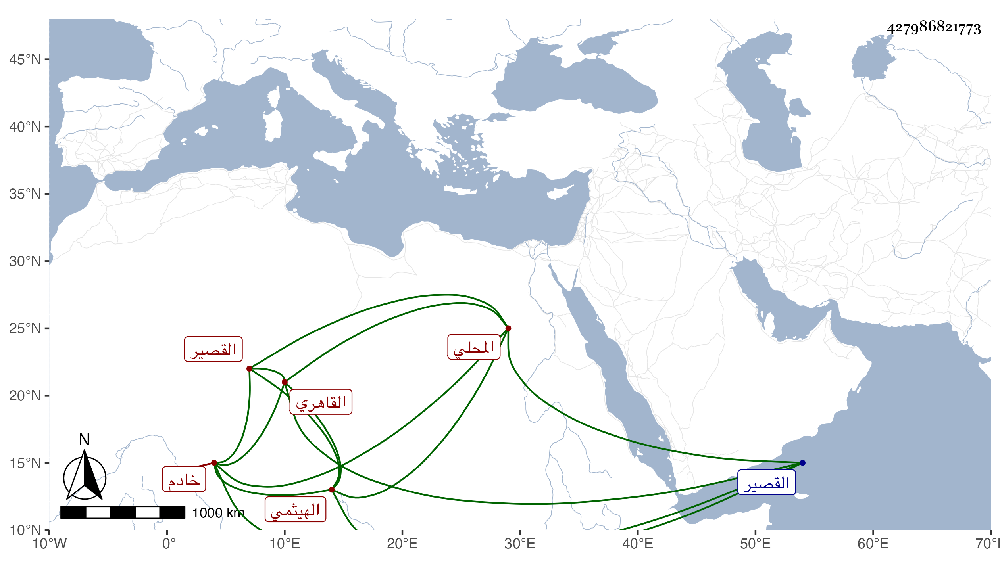

0902Sakhawi.DawLamic.ITO20230111-ara1.EIS1600.427986821773
Biography ID: 427986821773
716
علي بن حسن بن علي المحلي الهيثمي ثم القاهري القصير خادم الشيخ محمد بن صالح الآتي ويعرف بين الفقراء ونحوهم بكاتم السر . لازم خدمة المشار إليه وتردد إلى الأكابر وتنزل في بعض الجهات وسمع على بعض الشيوخ بقراءتي بل سمع مني في الإملاء وغيره .
